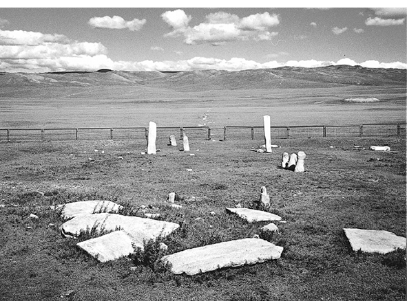
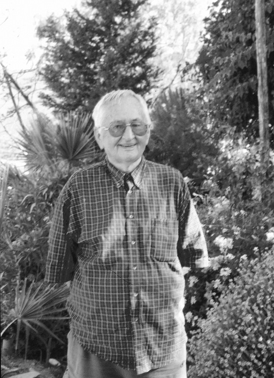
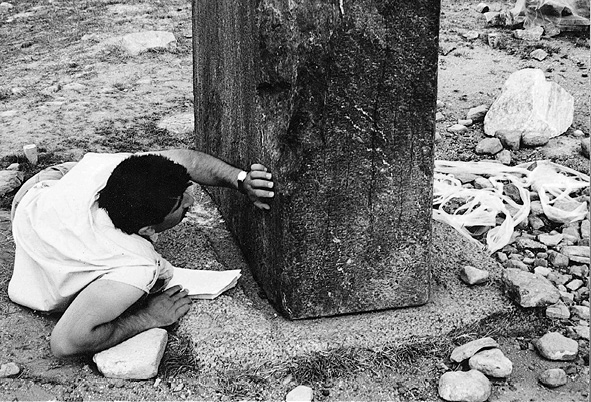
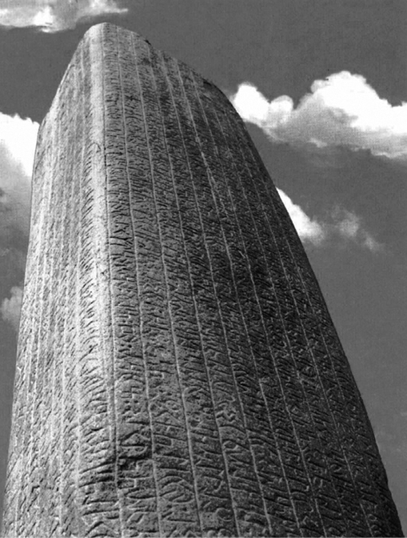
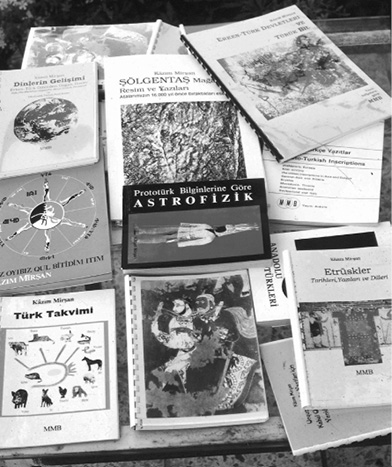
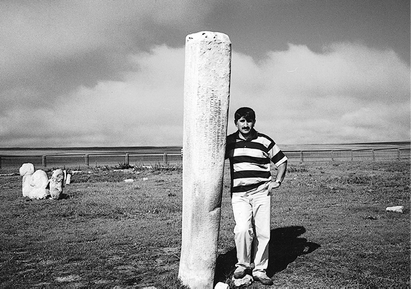

Orhun Yazıtları Yanlış mı Okundu
Bozkırın ortasında dikili duran taşlar... Asırlar boyu nelere şahid olmamış ki? Kervanların, savaşların, büyük göçlerin, esen rüzgarın, yağan yağmurun sessiz tanıkları onlar... Çok büyük sırları saklıyormuşçasına bir kenarda ketûm ve renksiz durdular asırlar boyu. Bir tarih gizlidir her kıvrımında; savaşlar, barışlar, hükümdarlar gelip geçmiştir gölgelerinden. Bir medeniyetin en önemli ipuçlarını saklar bedeninde.
Bilge Kağan, Kül Tigin ve Bilge Tonyukuk yazıtlarının Orhun Vadisinde dikili olması sebebiyle bunların hepsine birden Orhun Yazıtları denilmiş. Orhun Yazıtları, ilk olarak 19. yüzyılın sonlarında Danimarkalı Thomsen ve Rus bilim adamı Radlov tarafından incelenmiş, okunmuş. Tercüme edilmiş ve yazıtları kapsamlı bir şekilde ele alan atlaslar çıkartılmış. Türkiye’deki Türkologlar dahil olmak üzere bütün dünyadaki uzmanlar işte bu atlaslardan hareket ederek kalem oynatmışlar şimdiye kadar.
Fakat bir süredir yazıtların yanlış ve hatalı okunduğuna dair görüşler dile getiriliyor. Bu görüşleri dile getiren kişiler yanlışlıkları ilk okuma çalışmalarının yapıldığı 19. yüzyıla kadar götürüyorlar. Bu kişilerin başında da Kâzım Mirşan geliyor. Önce Kâzım Mirşan’ın sözlerine kulak verelim.
Yazıtlar yanlış okunmuş
Mirşan’ın iddiası birkaç noktada toplanıyor. Ona göre Türkiye’deki Türkologların büyük çoğunluğu yazıtlarla ilgili bilgileri Radlov’un kaynaklarından alıyorlar ve büyük yanlışlık yapıyorlar. Çünkü Radlov yazıtları tercüme ederken okuyamadığı ya da anlayamadığı yerleri yorumlamış fakat “ben böyle yorumluyorum” dipnotu düşmemiş. Dolayısıyla kendi yorumunu dayatmış ve yeni araştırmaların kapısını kapatmıştır bir nevi. “Radlov kendi okuyuş şeklini de dayatıyor. Hüseyin N. Orkun’un Radlov’dan yaptığı tercümelere bakın. Metinlerin nerede başladığı nerede bittiği belli değil. Bu, yazıtların yanlış yorumundan kaynaklanıyor. Radlov mânâ çıksın diye yorum getiriyor fakat başka anlamları gözardı ediyor.” Tabii bir de kelimelerin farklı okunmaları var. Söz gelimi, “tçm” yazıtlarda geçen bir kelime. Radlov bunu “Taçam” olarak okuyor ve Kültigin’in diğer isimlerinden biri olduğunu yazıyor. Kâzım Mirşan ise aynı kelimeyi “Atuçum” olarak okuyor “namdar lider”, “The Leader” olarak tercüme ediyor. Kısacası Radlov’un isim dediğine Mirşan sıfat diyor. Mirşan, Radlov ve Thomsen’in ard niyetli olmadıklarını fakat “yanlış yaptıklarını” söylüyor. Muhatabımız, Radlov ve Thomsen’den önce bölgede araştırma yapan ve Fin Atlası’nı yayımlayan Finlandiyalı bilim heyetinin, Radlov gibi kendi okuyuş şeklini ve yorumunu empoze etmediğini, ne varsa onu yansıtmaya çalıştıklarını söylüyor. Mirşan’a göre Fin Atlası çok iyi bir çalışma ve mutlaka okunmalı.
Günümüz Türkçe’siyle okunamaz
Kâzım Mirşan’a göre yanlış yorumun en büyük sebeplerinden biri de ilk okuyan kişilerin bu yazıtları konuşulan Türkçe’yi baz alarak okumaları ve yazıtlardaki dilin farklı olabileceği ihtimalini bile düşünmemeleri. Halbuki yazıtlardaki dil konuşulan Türkçe değil, “erken Türkçe” diyebileceğimiz bir dildir. Yani bu Türkçe’de yeni ek ve takılarla kelimelerden başka kelimelerin çıkartılması mümkün değildir. Mirşan, Thomsen ve Radlov’un affedilebilir olduğunu çünkü onların yazıtları okudukları dönemde gerek imkânların gerekse eski Türk dilleri ile ilgili bilginin çok kısıtlı olduğunu hatta bilinmediğini söylüyor. Mirşan’ın affedilemez dediği şey bugün aynı yanlışlıkların ısrarla devam ettiriliyor olması.

Moğolistan’da yer alan yazıtların sayısı 3-5 tane olmadığı, yer altında ve yer üstünde yüzlerce irili ufaklı taş yazıtın okunmayı beklediği söyleniyor. Bu durumun Türk dili ve Türk tarihi için yepyeni kapılar açacak bir potansiyel olduğu şüphesiz
Yakın bir dönemde araştırmaları yayımlanan, Orhun Yazıtları üzerinde çalışmalarıyla da bilinen Rus bilim adamı Malov’un Kazakistan’da bir ağaç parçası üzerine işlenmiş bir başka yazıt ile ilgili tercümesini kendi tercümesi ile karşılaştırmalı olarak okuyor Kâzım Mirşan. Bir sultanın bir sultana gönderdiği bir ferman olduğu söylenen bu yazıtı Malov, bir gezi yazısını andıran betimlemeler şeklinde yorumluyor. Mirşan, alışageldiğimiz bir “büyük hakandan filan hakana hitaben” diye başlayan bazı direktifler içeren bir tercüme ortaya koyuyor . Bir yazıtın bu kadar farklı okunuyor olması düşündürücü. Mirşan’ın iddiası ise yazıtlardaki dilin bugünkü dilden oldukça farklı oluşu ve bugünkü dilin verileriyle okunmasının büyük yanlışlıklar doğuracağı yolunda.
Yazıtlar M.Ö.ye mi ait?
Yazıtlarla ilgili hâlâ tartışmaların devam ettiği diğer bir konu ise yazıtların ne zaman yazıldığı. Yazıtların üzerinde ne zaman yazıldığına dair bir tarih olmadığı için yazıtın tarihini çıkartmak kolay olmuyor, dolayısıyla yorumlamak gerekiyor. Muhtemel tarihlendirme hatası yazıtın muhtevasıyla ilgili birbiriyle zıt büyük bir yorum farkını beraberinde getiriyor. İlk araştırmalarda Orhun Yazıtları’nın tarihi M.S. 8. yüzyıl olarak tespit edilmiş. Pek çok Türkolog bunun tartışmasız bir gerçek olduğunu söylerken bu tarihin bir iki yüzyıl erkene alınabileceğini söyleyenler de var. Kâzım Mirşan’ın iddiası ise bu yazıtların Milat’tan öncesine ait olduğu. Kâzım Mirşan tarihlendirme ile ilgili görüşünü ispatlamak için çok ayrıntılı bilgiler vermekten kaçınmıyor. Karşılaştırmalı olarak Radlov’un tarihlendirme yanlışlıklarından bir örnek veriyor; “Finlandiyalı heyet gidiyor Sibirya’daki yazıtları okumak için. Fin heyeti buradaki taşları araştırdıktan sonra bunların 3000 yıllık olduğunu söylüyor. Radlov ondan sonra gidiyor aynı bölgeye. Ve aynı yazıtlar için, “M.S 600 yıllarıdır” diyor. Bence bu yazıtlar Milat’tan öncesine aittir. Bu tarihlendirme yanlışlığının arkasında Türkler hakkındaki geri, yarı vahşi, yazıdan anlamaz, göçebe bir millettir önyargısı var.” Mirşan’a göre tarihlendirme yanlış olduğu zaman pek çok yanlışlığı beraberinde getiriyor.
Mirşan, Türkiye’de kendi görüşlerinin akademik çevrelerce dirençle karşılanmasını yerli akademisyenlerin kendi başına fikir yürütemiyor olması olarak değerlendiriyor. Türkiye’de Radlov’un tercümelerinin tercih edilmesinin sebebi olarak söylediği şey bu durum için de geçerli; “Hazır olarak sunulmuş materyal varken, yeni çalışmaya ne gerek var ki!.”
Kâzım Mirşan’ın otuzu aşkın kitabı var konu ile ilgili. Bütün yeni okumalarını ve eleştirilerini bu kitaplarda detaylı olarak inceliyor. Yeni çözümlemeleri yaparken eskilerini de aynı anda vermeyi ihmal etmiyor. Mirşan’a göre bütün bu yanlışlıklar Türk tarihi yazımını değiştirecek. Özellikle Orhun Yazıtları ile ilgili süregelen klasik yaklaşımın değişeceği kanaatinde. Bu arada Kâzım Mirşan’ın görüşleri, akademik çevrelerce “ihtiyatlı”, “toptan reddetme”, ”kısmen kabûl etme”, “destekleme” gibi çok farklı şekillerde karşılanıyor. Türkolojiye olan ilgisiyle bilinen Prof. Dr. Orhan Türkdoğan, Kâzım Mirşan’a sonuna kadar destek verenlerden. Türkdoğan, Kâzım Mirşan’ın mühendis kafasıyla “creative” sonuçlar elde edebildiğini söylüyor. Türkdoğan da Kâzım Mirşan gibi düşünüyor; “Türkologlar hiçbir şey yapmıyor, yerinde sayıyorlar.”
Alfabenin deşifresinde farklılıklar var
Ankara Üniversitesi Dil Tarih Coğrafya Fakültesi Türkoloji Bölüm Başkanı Prof. Dr. Sema Barutçu, Türkiye’de Köktürk dili ve grameri üzerine çalışan nadir kişilerden. Sema Barutçu’ya göre, alfabelerin deşifresi ve karakterlerin tanımlama işlemleri farklı yorumlar yapılmasına yol açıyor. Bu yorumlama yazıtlardaki eksik ve tahrif olunan kısımlar için de geçerli. Hatta “inanç sisteminin tefsir edilmesinden kaynaklanan farklı yorumlamalar olabilir” diyor Sema Barutçu. Orhun Yazıtları ile ilgili çalışmaları ile bilinen Türk Dil Kurumu eski Başkanı A. Bican Ercilasun, Kâzım Mirşan’ın tezlerine doğrudan yanlıştır dememekle birlikte oldukça ihtiyatlı yaklaşıyor.“Kâzım Mirşan’ın söylediklerinin bilim dünyasında tartışılması ve kabûl edilmesi gerekir ki doğru olduğunu kabûl edelim.”

Kâzım Mirşan başta Orhun Yazıtları olmak üzere pek çok Türk yazıtının yanlış okunduğunu söylüyor. Öyle ki bu Türk tarihinin yeniden yazılmasına yol açacak bir yanlışlık
Dört beş yıldır Moğolistan’da araştırma yapan Doç. Dr. Cengiz Alyılmaz’ın çalışmaları dikkat çekici. Doktorasını bu yazıtlar üzerine yapan Alyılmaz aynı zamanda Devlet Bakanlığı himayesinde TİKA’nın yürüttü Moğolistan’daki Türk Anıtları Projesi’nin (MOTAP) epigrafik belgelemeler sorumlusu. Cengiz Alyılmaz’ın özel ilgisi ve yazıtlardaki dil konusundaki ihtisası onun yaptığı ‘alan araştırmasını’ önemli kılıyor. Cengiz Alyılmaz ilk okumaların yapıldığı dönem ve yapan kişilerin psikolojilerinin iyi okunması gerektiği kanaatinde. “Arkeolojik çalışmalar dışında yazıtların epigrafik belgelendirilmeleri benim tarafımdan yapıldı. Bugüne kadar yapılan çalışmalarda gerçekten de eksiklikler hissediliyordu. Radlov, Thomsen, Malov ve diğerleri gibi yabancılar, yapmış oldukları çalışmaları atlas halinde yayınladılar. Bugüne kadar da bilim adamlarının çoğu bunların yapmış olduğu atlaslardan, daha doğrusu fotoğraflardan hareketle metni kurmuşlardır. Fotoğraflardan, atlaslardan yani ikinci-üçüncü kaynaktan metinlerini kuran insanlar tabii olarak bazı hatalara sebebiyet verdiler.”
Bilimsel rekabet
Alyılmaz, yanlışlığın temelinde iki bilim adamının arasındaki rekabetin olabileceği ihtimaline de dikkat çekiyor; “Özellikle Thomsen’le Radlov adeta birbiriyle yarış halinde idiler. Çok kısa süre içinde birbirinden önce atlas çıkarmak, bilim âlemine daha önceden tanıtmak endişesiyle çok hızlı hareket ettikleri için gözlerinden kaçan, o gün okuyamadıkları, o gün yanlış değerlendirdikleri pek çok şey bugüne kadar tekrar edildi bilim adamları tarafından.”
Ahmet Bican Ercilasun, Osman Fikri Sertkaya, Sema Barutçu, Talat Tekin yazıtlarla ilgili Türkçe eser veren isimlerden bazıları. Cengiz Alyılmaz’ın ifadeleriyle Türkiye’de bu işle uğraşan isimlerin, uzun süre yazıtların yanında kalma şansları olmadığı, o bölgeye gidip üç-dört ay o taşın dibine oturarak veya yazıtları harf harf okuma ve ondan sonra bunları yorumlama şansları olmadığı için tabii olarak eksiklikleri vardı ve bu insanlar bunun giderilmesini istiyorlardı. “Bu kapıyı açan insanlar da bu isimlerdi. Bunu çok samimi olarak söylemek lazım.”

Cengiz Alyılmaz, Orhun Yazıtları’nda yapılan ilk okuma işlemlerindeki eksik ve yanlışlıklarının zincirleme olarak devam ettiği kanaatinde. Alyılmaz, yeniden okuma çalışmalarının çok çarpıcı sonuçlar
verdiğini söylüyor
Farklı okuyuşlar ortaya çıkıyor
Cengiz Alyılmaz, bugüne kadar yapılan çalışmaları kelime kelime, harf harf bütün ayrıntısıyla ve mukayese ederek yazıtları yeniden yayına hazırlamış. İlk olarak Radlov’un ve Thomsen’in atlaslarını yayımladıkları tarihten bugüne yüz yılı aşkın bir zaman geçmesi sebebiyle o günden bugüne yazıtlarda meydana gelen kırılma, dökülme, silinme gibi değişimlerin epigrafik belgelendirilmesi yapılmış bu çalışma çerçevesinde. Ve diğer aşama ise muhteva ile ilgili. “İkinci ve asıl olarak yazıtların muhtevasını değiştirecek herhangi bir şey var mı? İfadelerde ve cümlelerde bozukluğa sebebiyet verecek kelimeler var mı ve bu kelimelere göre okuyuşlar söz konusu mu? Ve yeni okuyuşlar söz konusu olacak mı? Biz bunlara da baktık dolayısıyla çok enteresan şeylerle karşılaştık. Özellikle Tonyukuk yazıtlarında çok farklı okuyuşlar ortaya koyduk. Yani pek çok kelimenin çok farklı okunduğunu gördük. Ve bunların da anlamı değiştirdiğini gördük.” Alyılmaz’a göre yanlış okumalar, okunamayanlar, hatta ilaveler var. İpekyolu üzerinde olmasından dolayı sonradan bazı ilavelerin yapıldığı da tespit edilmiş.

Orhun Vadisi’ndeki yazıtların bilinen ilk Türk yazıtları olarak kabul edildiği düşünüldüğünde kitabelerin ne ifade ettiği daha da önem kazanıyor. Tabii ne ifade ettiğini doğru olarak anlamak da.
Akıllı iken aptal oldu
Bilge Kağan yazıtı diktirdiğinde yaşlandığını söylemektedir. “Ben özüm olup oldum, karıp oldum. Ben yaşlandım. Ama benim ihtiyarlamama rağmen herhangi bir kağanlıkta benim gibi bir bilge olduktan sonra o milletin ne sıkıntısı olabilecektir.” Hiçbir sıkıntısı olamayacağını ve bir kağanın yanında akıllı bir vezirin bulunması gerektiğini işaret ediyor. Yani kendisini övüyor ve kağanlığının için nimet olduğunu anlatıyor. Tercüme edilen metinse şöyle: “Herhangi bir kağanlıkta benim gibi bir aptal olduktan sonra onun ne sıkıntısı olacakmış, o devletin daha başka ne sıkıntısı olur.” Yani akıllı ile aptal birbirine karışıyor ve tercüme eden kişi yazıtı yazan kişinin övündüğünü dikkate bile almayarak başka ve birincisinin tam zıddı bir anlam çıkartıyor. Yrd. Doç. Dr. Cengiz Alyılmaz “Böyle tercüme olabilir mi?” diyerek, tercüme edenin metne kendi yorumunu kattığını, ne anlıyorsa onu verdiğini söylüyor. “Tabii bu bir tanesi” demeyi de ihmal etmiyor. Önümüzdeki günlerde bu yanlışlıkları bir makale vasıtasıyla duyurmaya hazırlanıyor.
Cengiz Alyılmaz’ın Orhun Vadisinde yaptığı çalışmanın üçüncü aşaması ise yazıtlarda kullanılan alfabenin menşei ile ilgili. “Orhun Yazıtları’nda kullanılan alfabenin menşeinin bize ait olduğunu sürekli savunuyoruz. Ama biz bunları tam tespit etmiş değiliz ne yazık ki. Orhun alfabesi 38 harfli diyoruz. Acaba bir 39’uncu yok mu? Yoksa o harflerin farklı karakterleri var mı yazıtlarda? Ben bunları da araştırdım. Dolayısıyla bu yeni bakışla yazıtlara bakıldığında özellikle Tonyukuk yazıtında yeni harflerin yeni karakterlerin olduğunu tespit ettik.” Bu arada görüştüğümüz Türkiye’nin önde gelen akademisyenlerinin Cengiz Alyılmaz’ın çalışmalarını ilgiyle takip ettiklerini belirtelim. Bu çalışmadan rahatsız olduğunu gizlemeyen kişilere karşılık TİKA Başkanı Dr. Öner Kabasakal, Cengiz Alyılmaz’ın başarılı çalışmalar yaptığını ve ilgiyle takip edilmesi gerektiğini söylüyor.
Cengiz Alyılmaz, Orhun Yazıtları’ndaki dilin edebi bir dil olduğunu, dil bilimine göre bir dilin bu hale gelmesi için en az 2000 yıl geçmesi gerektiğini söylüyor. Prof. Dr. Sema Barutçu, Alyılmaz’a ilaveten Türk dilinde “Ahd-i Atik” tercümelerine rastlandığını, bir dilden bir başka dile kutsal metnin çevrilebilmesi için o dilin soyutlama kabiliyeti kazanmış olması gerektiğini ifade ediyor. Ki bu çok uzun yıllar alacaktır. “Bazıları Türk Dili’ni M.Ö. 3000-3500’e dayandırıyor. Bazı bulgulara bakıldığında bence bu M.Ö. 7000’lere kadar uzanıyor” diyor Sema Barutçu. Böyle bir arka plana sahip bir dilin ilk yazılı numuneleri insanlık tarihi içinde değerlendirildiğinde yakın bir tarih sayılan M.S. 8. yüzyıla dayandırmak pek kabûl edilir gibi gözükmüyor. Ama bilimsel olarak bunun ortaya konması için Moğolistan’da yapılmakta olan projenin devamını ve sonuçlarını beklemek gerekiyor. Alyılmaz’ın ifadesiyle Türk tarihini “efsane” olmaktan kurtaracak bir çalışma bu.
Öyle anlaşılıyor ki Orhun Yazıtları’yla ilgili bilgiler tazelenmek durumunda. Çünkü yeni okumalar Orhun Abidelerinin bugüne kadar bilinenlerden daha farklı taraflarının olduğunu ortaya koyuyor. Pek çok sebepten dolayı yanlış okunan, okunamayan ve yanlış yorumlanan kısımların deşifre edilmesiyle Türk tarihi her zamankinden daha berrak, daha anlaşılır, daha sağlam ve daha gerçekçi bir tarih olarak çıkacak karşımıza... Şöyle gönülden bir “inşaallah”diyoruz ve merakımızın giderilmesini bekliyoruz.
Kâzım Mirşan kimdir?
Kâzım Mirşan aslında Orhun Yazıtları’nı ilk defa okuyanlardan Danimarkalı Thomsen gibi bir mühendis. Önce hobi olarak ilgilendiği Türkoloji sonradan tutkuyla sarıldığı bir “meslek” haline gelmiş. Kendi mesleği çok kazandıran bir meslek olmasına rağmen lise yıllarından başlayan Türkolojiye, özellikle Türk dillerine olan ilgisini mesleği ile paralel olarak devam ettirmiş. Bazıları İngilizce ve Fransızca olmak üzere 38 kitabı var. Kâzım Mirşan aslında Batı Sibirya’nın Tümen şehrinden. Dedesi büyük bir ticaret adamı imiş. 1917 devriminden sonra Doğu Türkistan’a yerleşmişler. 13-14 yaşına kadar Doğu Türkistan’da yaşadıktan sonra 1935’te İstanbul’a gelip liseyi Boğaziçi Lisesi’nde okumuş. Onu dile yönelten şeyse okul sıralarında öztürkçe ile tanışması. Müdür kelimesinin “direktör” olmasına ve bunun Öztürkçe izahatına pek bir anlam verememiş söz gelimi. 2. Dünya Savaşı yıllarında İTÜ İnşaat Mühendisliği’nde okurken dil öğrenmek için Berlin’e gider. Rus toplarının sesi Berlin’den duyulmaya başlayınca Stutgard’a taşınır. Dil eğitimi yanında mühendislik eğitimini Almanya’da tamamlar ve Türkiye’ye döner. Kâzım Mirşan uzun yıllar boyunca altı ay mühendis, altı ay Türkolog olarak yaşar. Kâzım Mirşan’ın araştırmalarını kolaylaştıran en büyük unsur şüphesiz çok sayıda dil bilmesi. Türkoloji’yi kastederek “Bizim meslekte bu metni okuyamıyorum diye bir şey olmaz” diyor. Almanca, Rusça, İngilizce en sık kullandığı diller. Önüne Yunanca ve İtalyanca metinler geldiğinde de okuyor. Tabii ki Asya’nın yeni ve eski lehçelerini saymamız gerekiyor. Halen Bodrum Türkbükü’nde yaşıyor.

Kazım Mirşan’ın kendi yazdığı ve çoğalttığı kitaplarından bazıları
***
Kazakistan Dil Bilim Enstitüsü Müdürü ve Ord. Profesör Dr. Abduali Kaydarov
“Tartışmalar devam ediyor”
Orhun Yazıtları yaklaşık son 150-200 yıldan bu yana araştırılmaya başlandı. İlk okuyan Thomsen ve Radlov’dur. Onlar okuduktan sonra araştıran, yazan, sözlerini yorumlayan alimler çoğalmaya başladı. Bunlardan biri olan ve Radlov’un öğrencisi ve benim de aynı zamanda öğretmenin olan Sergey Malov’un, 1995 yılında ilk Türk yazıtları hakkında kitabı çıkmıştı. Bu konuyu inceleyen ve araştıranlar daha sonra çoğalmaya başladı.
Aynı zamanda Almanya’dan âlimler, İngiltere’li Gerhelt Vovson gibi profesörler de bu konuyu inceleyen araştırmacıların arasında. SSCB döneminde Moskova ve Leningrad şehirlerinde de bu konuları inceleyenler var. Kazakistan’da Naminhonov, onun öğrencisi Ubeydullah Aydarov, Altay Amanjolov isimli uzmanlar da Orhun Yazıtları’nı inceleyenler arasında. Bunları incelerken 150-200 yıldan bu yana araştırılan ve ortaya konulan kaynaklardan da istifade ettiler. Tartışmalar devam ediyor. Tabii ki bu konunun iyi araştırılması lazım. Onun için bu konunun çok iyi incelendiğini söylemek mümkün değil. Benim bir öğrencim Pekin’de öğretmen. O eski Uygur yazısını ve diğer yazıları inceliyor. Kırgızistan’da da İgir Aleyseyiviç Blatmanov isimli bir profesör var. Onlar da araştırıyorlar. Radlov’un zamanında Malov gibi oryantalist alimlerin çekip getirdiği fotoğraflar var. Onlardan da inceleniyor.
***
Ank. Ünv. Dil Tarih Coğrafya Fak. Türkoloji Bölüm Bşk. Prof. Dr. Sema Barutçu
Farklı okumalar var
Orhun Yazıtları’nı farklı okuma şekilleri olabilir. Alfabelerin deşifresinden, karakterlerinden, tanımlamalarına kadar bazı unsurlar farklılıkları meydana getiriyor. Eksik ve tahrip edilmiş olan kısımlarının tamamlanması ve yorumlanması da farklı metinler ortaya çıkartabiliyor. İnanç sisteminin tefsir edilmesinden kaynaklanan farklı yorumlamalar da olabilir. Şöyle olabilir böyle olabilir gibi tasarruflar olabilir.
1300 yıllık geçmiş, insanlık tarihi düşünüldüğünde yaşadığımız döneme çok yakın bir tarih. Yazıtlarda yer alan yazılar edebi bir dil, devlet dili ve gizli olmayan bir dildir. Oldukça gelişmiş bir dildir. Ki, Ahd-i Atik gibi kutsal metinlerin çevrildiğini görüyoruz; bir dilden başka bir dile kutsal metnin çevrilebilmesi için dilin soyutlandırma kabiliyetinin gelişmiş olması gerekmektedir. Bu bakımdan yazıtlardaki dil çok gelişmiş bir dildir. Bu dili M.Ö. 3000-3500’e dayandıranlar var. Bence M.Ö. 7000’li yıllara bile dayanıyor. Çünkü bunun izleri var.
***
Moğolistan Türk Anıtları Projesi’nin içinde olan Yrd. Doç. Dr Cengiz Alyılmaz:
Çadırda değil şehirde yaşıyor
Çalışma, 1995 yılında Süleyman Demirel’in Moğolistan’a ziyareti ve direktifi üzerine başladı. Amaç Türk kültür ve medeniyetinin ortaya çıkartılması. Bu görev kısa adı TİKA olan Türk İşbirliği ve Kalkınma Ajansı’na verildi. 95-97 arasında Türk-Moğol heyeti kurulmasına karar verildi ve bilim adamları bir araya gelerek neler yapılabileceğini konuştu. Bölgeye heyetler halinde ziyaretler gerçekleşti. Neticede 96 yılı sonlarında oluşturulan Türk Moğol bilim heyeti 97 yılında bölgedeki çalışmalarına başladı. Restorasyon ve konservasyon için gerekli tüm altyapı; yol, bina müze yapımı; dahası yazıtların korunması için gerekli olan bütün araştırma ve incelemeler yapıldı. Bunlar yapılırken dünyada bu tür araştırmalar için belirlenen en üst bilimsel veriler esas alındı ve en üst teknoloji kullanıldı. 99 yılında yer üstü çalışmaları, epigrafik belgelemeler, restorasyon ve konservasyon ile ilgili çalışmalar bitti. 2000 yılı içinde Bilge Kağan yazıtından başlamak üzere kazı işlemleri yapılacak (Heyet geçen hafta içinde Moğolistan’a gitti). Yer üstündeki çalışmalar bitti ve raporlar halinde TİKA’ya sunuldu. TİKA bunu bastıracak. Bununla ilgili geçen aylarda İstanbul’da 70 bilim adamının katıldığı 2. Uluslararası Göktürk Anıt ve Yazıtları Kollegyumu yapıldı. Burada “daha neler yapılabilir” konusu görüşüldü. Doğrusu biz bu kazıdan çok şey bekliyoruz.
Yazıyla coğrafyayı bütünleştirdik
Yazıtların muhtevasına girince yazıtların niye dikildiğinin ötesinde o verilmek istenen mesajı, yani geçmişten hâle, hâlden istikbale iletilmek istenen mesajla birlikte çok dâhîyâne fikrin mahsülü olduğunu görüyorsunuz. Yazıtlar bir kere İpekyolu’nun merkezine dikilmiş. Ve bunu da Bilge Kağan yazıta kazmış. Ama şimdi yazıtın hep ucundan kulağından, şeklinden, şemailinden, alfabesinden söz edildiği, bu böyle mi okunsun öyle mi okunsun diye yıllardır uğraşıldığı için biraz da içine girilememiş. Yani o coğrafya ile yazıtı bütünleştirebildik biz. Yani o coğrafyaya gittikten ve 4-5 yıldır orada kaldıktan sonra o coğrafya ile yazıtların ne anlam ifade ettiğini insan çok daha iyi anlıyor.
İşlek bir yere kurulmuş
Yazıtların Uygur devletinin başkenti olan Karabaldasu’ya uzaklığı 30 km. Ve Cengizhan’ın başkenti Karakurum’a uzaklığı da 60 km. Karıştırılmasın, Cengizhan yazıtlardan çok sonradır. Ama bu bize gösteriyor ki hem Karabaldasu hem Karakurum ve diğer taraflara bakıldığında yazıtlar son derece işlek bir yere dikilmiş. Bilge Kağan amacını söylüyor: “Ben uzaktaki tahtlara, İranlılara kadar herkes görsün-bilsin diye yazıtları ulaşılan merkezi bir yere diktim.” Yazıtların muhtevası kadar dikiliş şekli de bilgecedir. Yeriyle ve muhtevasıyla yazıtların tarihimizin ölümsüz yapı taşları olduğu açık. İkinci olarak yazıtlarda yer alan tarihi şahsiyetlerin gerçek kimlikleri ve Türk tarihindeki fonksiyonları ortaya çıktı.
Efsaneden gerçeğe
Biz Köktürk yazıtları dediğimizde üç tanesini akla getirmişiz. Bunlara ilaveten Uygur dönemine ait beş-altı tane var. Oysa irili ufaklı dünya kadar yazılı taş var. Bugün bunların envanteri çıkartılıyor, fotoğrafları çekiliyor. Bunlarla ilgili bilgi-bulgu-belge ne varsa hepsi bir araya toplanıyor. Dolayısıyla Türk medeniyet tarihi ile ilgili maddi nümûneler tek tek tespit ediliyor ve kayda geçiriliyor. Tarih efsaneden çıkıp gerçeğe dönüşüyor.

Yrd. Doç. Dr. Cengiz Alyılmaz TİKA’nın yürüttüğü proje ile ilgili olarak 4-5 yıldır Moğolistan’da yazıtların epigrafik
belgelendirilmesiyle meşgul
Şeyh Galip, Divan şiirinin zirvesiyse yazılı taş edebiyatında da bir sürü yazıt var. Orhun Yazıtları bu işin zirvesi. En yoğun yazıların bulunduğu ve en yoğun yazılı yüzeylerin bulunduğu yazıtlar Orhun Yazıtları. Ve en net, en berrak ve en temiz Türkçe’yle yazılmıştır. En sağlam metindir. Metinde kopukluk yoktur. Vakıa zinciri sağlamdır. Zaman bellidir, hayali değildir. Burada anlatılan tarihi gerçekler Çin kaynaklarıyla aynen örtüşüyor. Yazıtların batı yüzü Çince yazılmış. Bu bölgede en aktif olan Çinlilerdir. Batı yüzeyine yazıtların Çince olarak özetlenmesi oldukça bilgece bir tutum. Bu anadillerini unutan, Çinlileşmiş Türkler için de yazılmış olabilir.
Yüzlerce bilim adamını “doç-prof” yapar!
Yazıtlara bakıldığında çadırı sırtında gezen bir millet değil bu millet. Yerleşik bir medeniyeti var. Yazıtların hemen yanındaki Karabalgasu şehri kalıntısı, Türkiye’deki pek çok antik kent kalıntısının iki üç katı. Çok büyük kültür ve medeniyet var orada. Yani yerleşik medeniyeti yaşadığımızın ifadesi o bölgedeki yazıtlar. Ticaretle, sanatla, edebiyatla uğraşıyorlar, kervanlar gönderiyorlar. Yüzlerce bilim adamını doçent-profesör yaparak göklere çıkaracak bir birikim var orada. Önce beş yıl olarak başlamıştı şu anda 50 yıl olarak hedef belirlendi. 50 yıllık süre içinde Türk kültür ve medeniyetinin ciddi anlamda ortaya çıkacağına inanıyorum.
Moğol devletine çok şey borçluyuz. Moğolistan Türk kültür ve medeniyetinin bugüne kadar adeta bekçiliğini yapmıştır. Ve onlar bir kardeş sıcaklığı ile yaklaşıyorlar. Türkiye Türklerini de kendilerinin Avrupa’daki temsilcileri olarak görüyorlar. Moğol halkı yazıtları adeta ziyaretgâha çevirmişler.
Öncelikle projeyle ilgili adı anılması kişiler Türk dünyasından sorumlu Devlet Bakanı Prof. Dr. Abdülhaluk Çay ve TİKA Başkanı Dr. Ömer Kabasakal. Bu ikisi özellikle son dönemde olağanüstü gayret göstermiştir.
Aksiyon 292.sayı